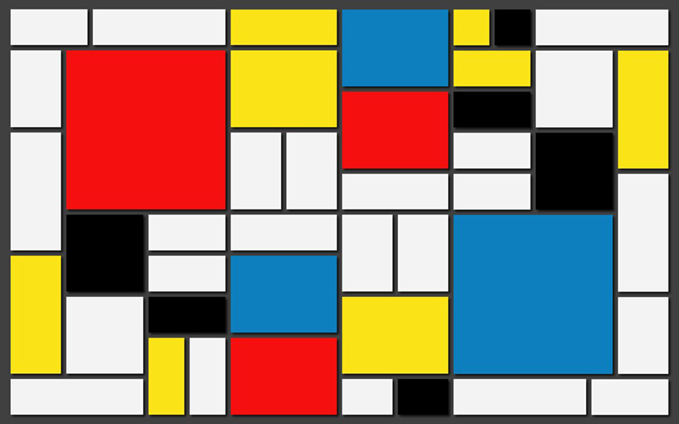
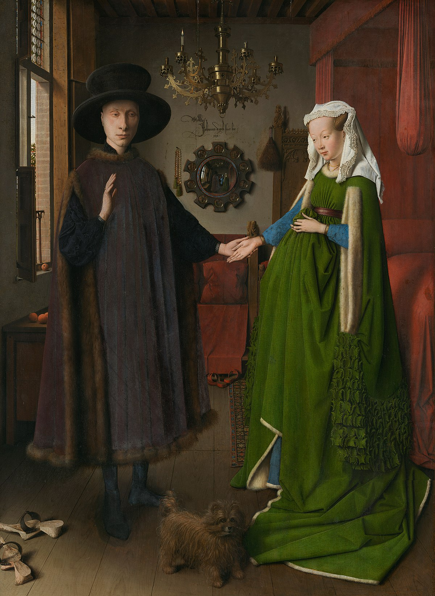
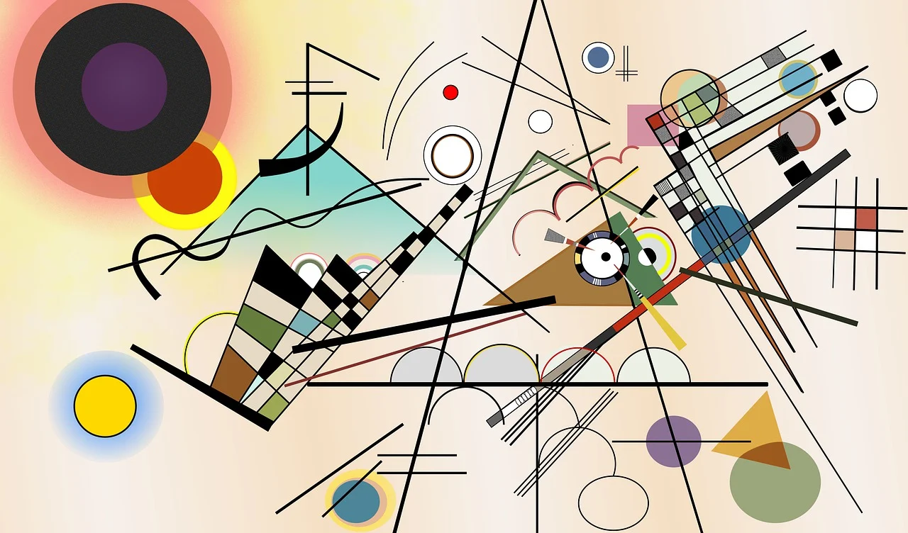
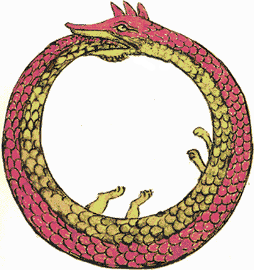

فرمالیسم چیست؟
- تمرکز بر فرم و ساختار
- تحلیل چگونگی اثر به جای محتوای آن

تاریخچه کوتاه
- ظهور در روسیه در اوایل قرن بیستم
- تاثیر بر نقد نوین در غرب
- برداشتن تمرکز از روی فاکتورهای خارجی (مثل زندگی شخصی)
«هنر برای این وجود دارد که انسانها احساس کنند، که سنگ را سنگی کند. هدف هنر این است که حس اشیا را آنگونه که ادراک میشوند منتقل کند، نه آنگونه که شناخته شدهاند.» — ویکتور شکلوفسکی، هنر به عنوان تکنیک (۱۹۱۷)

فرمالیسم در هنر
- تاکید بر عناصر بصری
- مثال: هنر انتزاعی و تمرکز بر فرم

نقاشی «پرتره آرنولفینی»؛ تمرکز بر داستان و واقعگرایی

نقاشی «ترکیببندی هشتم»؛ تمرکز بر فرم و عناصر بصری
فرمالیسم در ادبیات
- تمرکز بر ساختار و زبان
بهترین زمانها بود، بدترین زمانها بود، عصر خرد بود، عصر حماقت… (چارلز دیکنز، ۱۸۵۹)
در سمت آفتابی خیابان در مقابل داروخانه، مردی با پالتو در حال صحبت با زنی است که گربهای در بغل دارد… (ویکتور شکلوفسکی، ۱۹۲۳)
پیوند با فرمالیسم
- پیچیدگی روایات و آزمایشهای سبکی
- Infinite Jest
«حقیقت شما را آزاد خواهد کرد. اما نه تا زمانی که با شما کارش تمام نشده باشد.» (دیوید فاستر والاس، Infinite Jest)
نقدها و میراث
- عدم توجه به زمینه تاریخی و اجتماعی
- تاثیر پایدار بر ادبیات مدرن

نتیجهگیری و بحث
- تاثیر فرمالیسم بر هنر و ادبیات امروز
خود ارجاعی
مقدمه
- بررسی مفهوم و کاربرد خودارجاعی
- تکنیکی در داستاننویسی که در آن نویسنده یا شخصیتها بهطور مستقیم یا غیرمستقیم به فرآیند نوشتن، متن، یا ساختار داستان اشاره میکنند
تاریخ خودارجاعی در ادبیات
-
ظهور در ادبیان از قرن بیستم
- فرانتس کافکا
- جیمز جویس
- ساختار مصنوعی روایت
خودارجاعی در پستمدرن
- ساختارشکنی و بازی با متن
- توماس پینجن
- ایتالو کالوینو
- خورخه لوییس بورخس
- به چالش کشیدن ایدههای ثابت و ایجاد تردید
خودارجاعی در دوران پس از پستمدرن
| ویژگی | پستمدرن | پسامدرن جدید |
|---|---|---|
| هدف | چالش با روایتها و ساختارهای سنتی | بازسازی معنا و ایجاد ارتباط انسانی |
| نگرش به حقیقت | نسبی و بیثبات | پیچیده اما قابل کشف |
| تعامل با مخاطب | فاصلهگذاری و سردی | همدلی و درگیر کردن احساسی و فکری مخاطب |
| شکل خودارجاعی | تأکید بر مصنوع بودن متن | استفاده از خودارجاعی برای بیان مسائل انسانی |
Umberto Eco
1932-2016
خودارجاعی در ادبیات ایران
- بیژن نجدی
-
چگونه میتوانم این را بنویسم؟ نمیدانم چه کسی از بین این کلمات بیرون خواهد آمد. شاید من، شاید او، شاید هیچکداممان.
- محمود دولت آبادی
-
کتابهای زیادی خواندهام، اما هیچکدام اینگونه که در این کتاب نوشتهام، نخواندهام.
- محمدعلی جمالزاده
-
باید بگویم که این داستان ممکن است تنها یک داستان نباشد، بلکه گاهی به نوعی سرگذشت این شخصیتها را بر صفحه میآورم.
- هوشنگ گلشیری
-
این تنها یک داستان نیست، این داستان من است که در میانه صفحات پراکنده میشود.
- ابوتراب خسروی
-
این را که مینویسم، خودم هم نمیدانم به کجا میرود. شاید این داستان، داستان دیگری باشد که من هنوز ننوشتهام.